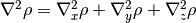
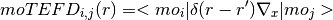
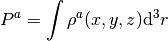

Function Reference¶
The following section contains a detailed description of all modules present in ORBKIT.
orbkit.qcinfo¶
Module for processing the data read from the output files of quantum chemical software.
-
class
orbkit.qcinfo.CIinfo(method='ci')¶ Class managing all information from the from the output files of quantum chemical software for CI calculations.
The CI related features are in ongoing development.
-
class
orbkit.qcinfo.QCinfo¶ Class managing all information from the from the output files of quantum chemical software.
See Central Variables in the manual for details.
-
atoms(bbox=None, **kwargs)¶ Create an ASE atoms object. (cf. https://wiki.fysik.dtu.dk/ase/ase/atoms.html )
Parameters:
- bbox : list of floats (bbox=[xmin,xmax,ymin,ymax,zmin,zmax]), optional
- If not None, sets the unit cell to the grid boundaries and moves the molecule in its center.
Returns:
- atoms : Atoms object
- See https://wiki.fysik.dtu.dk/ase/ase/atoms.html for details
Note
ASE has to be in the PYTHONPATH
-
format_geo()¶ Converts geo_info and geo_spec to a universal format.
-
get_ase_atoms(bbox=None, **kwargs)¶ Create an ASE atoms object. (cf. https://wiki.fysik.dtu.dk/ase/ase/atoms.html )
Parameters:
- bbox : list of floats (bbox=[xmin,xmax,ymin,ymax,zmin,zmax]), optional
- If not None, sets the unit cell to the grid boundaries and moves the molecule in its center.
Returns:
- atoms : Atoms object
- See https://wiki.fysik.dtu.dk/ase/ase/atoms.html for details
Note
ASE has to be in the PYTHONPATH
-
get_bc(matrix=None, is_vector=False)¶ Calculates Barycenter for scalar field
-
get_coc()¶ Computes the center of charge.
-
get_com(nuc_list=None)¶ Computes the center of mass.
-
select_spin(restricted, spin=None)¶ For an unrestricted calculation, the name of the MO (‘sym’ keyword in
qc.mo_spec) is modified, e.g., 3.1_b for MO 3.1 with beta spin and 3.1_a for MO 3.1 with alpha spin. For restricted calculation, the ‘spin’ keyword fromqc.mo_specis removed.Parameters:
- restricted : bool
- If True, removes the ‘spin’ keyword from
qc.mo_spec. - spin : {None, ‘alpha’, or ‘beta’}, optional
- If not None, returns exclusively ‘alpha’ or ‘beta’ molecular orbitals.
-
sort_mo_sym()¶ Sorts mo_spec by symmetry.
-
todict()¶ Converts all essential variables into a dictionary.
-
view(select=slice(None, None, None), bbox=None, **kwargs)¶ Opens ase-gui with the atoms of the QCinfo class. (cf. https://wiki.fysik.dtu.dk/ase/ase/visualize/visualize.html )
Parameters:
- select : slice or (array of int), default: all atoms
- Specifies the atoms to be shown.
- bbox : list of floats (bbox=[xmin,xmax,ymin,ymax,zmin,zmax]), optional
- If not None, sets the unit cell to the grid boundaries and moves the molecule in its center.
Note
ASE has to be in the PYTHONPATH
-
-
orbkit.qcinfo.get_atom_symbol(atom)¶ Returns the atomic symbol of a given atom.
Parameters:
- atom : int or str
- Contains the atomic number of the atom.
Returns:
- symbol : str
- Contains the atomic symbol.
-
orbkit.qcinfo.read_nist()¶ Reads and converts the atomic masses from the “Linearized ASCII Output”, see http://physics.nist.gov.
-
orbkit.qcinfo.standard_mass(atom)¶ Returns the standard atomic mass of a given atom.
Parameters:
- atom : int or str
- Contains the name or atomic number of the atom.
Returns:
- mass : float
- Contains the atomic mass in atomic units.
orbkit.options¶
Module containing and processing all orbkit options.
Functions for developers¶
-
orbkit.options.get_options()¶ Returns all possible options and their value.
-
orbkit.options.check_options(error=<function raise_error>, display=<function print_message>, interactive=False, info=True, check_io=True)¶ Checks options for errors.
Parameters:
- error : function, optional
- Handles the errors.
- display : function, optional
- Handles the print commands.
- interactive : bool, optional
- If True and a file does not exist, asks the user to insert name of existing file.
- info : bool, optional
- If True, some additional information is printed.
Default Error and Exception Handling: Prints the errors and continues.
-
orbkit.options.check_if_exists(fid, what='', error=<type 'exceptions.IOError'>, display=<built-in method write of file object>, interactive=False)¶ Checks the existence of a file.
Parameters:
- fid : string
- Specifies filename of the requested file.
- what : string, optional
- Describes the file.
- error : function, optional
- Handles the errors.
- display : function, optional
- Handles the print commands.
- interactive : bool, optional
- If True and a file does not exist, asks the user to insert name of existing file.
Returns:
- fid : string
- Specifies filename of the requested file.
Parameters¶
-
orbkit.options.itypes= ['molden', 'aomix', 'gamess', 'gaussian.log', 'gaussian.fchk', 'wfn', 'wfx', 'cclib', 'orbkit.dump']¶ Specifies possible input types.
-
orbkit.options.otypes= ['h5', 'cb', 'am', 'hx', 'vmd', 'mayavi']¶ Specifies possible output types.
-
orbkit.options.drv_options= ['None', 'x', 'y', 'z', 'xx', 'yy', 'zz', 'x2', 'y2', 'z2', 'xy', 'yx', 'xz', 'zx', 'yz', 'zy']¶ Specifies possible derivative variables.
orbkit.main¶
Module for controlling all computational tasks.
-
orbkit.main.init(reset_display=True)¶ Resets all
orbkit.optionsandorbkit.display.
-
orbkit.main.run_orbkit(use_qc=None, check_options=True, standalone=False)¶ Controls the execution of all computational tasks.
Parameters:
- use_qc : QCinfo, optional
- If not None, the reading of a quantum chemistry output is omitted and the given QCinfo class is used for all computational tasks. (See Central Variables in the manual for details on QCinfo.)
- check_options : bool, optional
- If True, the specified options will be validated.
Returns:
- data : type and shape depend on the options.
- Contains orbkit’s output. See ORBKIT’s High-Level Interface in the manual for details.
-
orbkit.main.run_standalone()¶ Starts orbkit as a standalone program using parser options (
orbkit.core.init_parser).
orbkit.read¶
Module for reading the output files of quantum chemical software.
-
orbkit.read.convert_cclib(ccData, all_mo=False, spin=None)¶ Converts a ccData class created by cclib to an instance of orbkit’s QCinfo class.
Parameters:
- ccData : class
- Contains the input data created by cclib.
- all_mo : bool, optional
- If True, all molecular orbitals are returned.
- spin : {None, ‘alpha’, or ‘beta’}, optional
- If not None, returns exclusively ‘alpha’ or ‘beta’ molecular orbitals.
Returns:
- qc (class QCinfo) with attributes geo_spec, geo_info, ao_spec, mo_spec, etot :
- See Central Variables for details.
-
orbkit.read.main_read(filename, itype='molden', all_mo=False, spin=None, cclib_parser=None, **kwargs)¶ Calls the requested read function.
Parameters:
- filename : str
- Specifies the filename for the input file.
- itype : str, choices={‘molden’, ‘gamess’, ‘gaussian.log’, ‘gaussian.fchk’, ‘aomix’, ‘cclib’}
- Specifies the type of the input file.
- all_mo : bool, optional
- If True, all molecular orbitals are returned.
- spin : {None, ‘alpha’, or ‘beta’}, optional
- If not None, returns exclusively ‘alpha’ or ‘beta’ molecular orbitals.
- cclib_parser : str
- If itype is ‘cclib’, specifies the cclib.parser.
Returns:
- qc (class QCinfo) with attributes geo_spec, geo_info, ao_spec, mo_spec, etot :
- See Central Variables for details.
Note:
All additional keyword arguments are forwarded to the reading functions.
-
orbkit.read.mo_select(mo_spec, fid_mo_list, strict=False)¶ Selects molecular orbitals from an external file or a list of molecular orbital labels.
Parameters:
- mo_spec :
- See Central Variables for details.
- strict : bool, optional
- If True, orbkit will follow strictly the fid_mo_list, i.e., the order of the molecular orbitals will be kept and multiple occurrences of items will evoke multiple calculations of the respective molecular orbitals.
- fid_mo_list : str, ‘all_mo’, or list
- If fid_mo_list is a str, specifies the filename of the molecular orbitals list.If fid_mo_list is ‘all_mo’, creates a list containing all molecular orbitals.If fid_mo_list is a list, provides a list (or a list of lists) of molecular orbital labels.
Supported Formats:
Integer List (Counting from ONE!):
1 2 3 5 4 homo lumo+2:lumo+4
List with Symmetry Labels:
1.1 2.1 1.3 1.1 4.1 4.1 2.3 2.1
Returns:
- Dictionary with following Members:
mo: - List of molecular orbital labels.
mo_ii: - List of molecular orbital indices.
mo_spec: - Selected elements of mo_spec. See Central Variables for details.
mo_in_file: - List of molecular orbital labels within the fid_mo_list file.
sym_select: - If True, symmetry labels have been used.
..attention:
For unrestricted calculations, orbkit adds _a (alpha) or _b (beta) to the symmetry labels, e.g., 1.1_a. If you have specified the option spin=alpha or spin=beta, only the alpha or the beta orbitals are taken into account for the counting within the Integer List.
-
orbkit.read.read_aomix(filename, all_mo=False, spin=None, i_md=-1, interactive=True, created_by_tmol=True, **kwargs)¶ Reads all information desired from a aomix file.
Parameters:
- filename : str
- Specifies the filename for the input file.
- all_mo : bool, optional
- If True, all molecular orbitals are returned.
- spin : {None, ‘alpha’, or ‘beta’}, optional
- If not None, returns exclusively ‘alpha’ or ‘beta’ molecular orbitals.
- i_md : int, default=-1
- Selects the [AOMix Format] section of the output file.
- interactive : bool
- If True, the user is asked to select the different sets.
- created_by_tmol : bool
- If True and if Cartesian basis set is found, the molecular orbital coefficients will be converted.
Returns:
- qc (class QCinfo) with attributes geo_spec, geo_info, ao_spec, mo_spec, etot :
- See Central Variables for details.
-
orbkit.read.read_gamess(filename, all_mo=False, spin=None, read_properties=False, **kwargs)¶ Reads all information desired from a Gamess-US output file.
Parameters:
- filename : str
- Specifies the filename for the input file.
- all_mo : bool, optional
- If True, all molecular orbitals are returned.
Returns:
- qc (class QCinfo) with attributes geo_spec, geo_info, ao_spec, mo_spec, etot :
- See Central Variables for details.
-
orbkit.read.read_gaussian_fchk(filename, all_mo=False, spin=None, **kwargs)¶ Reads all information desired from a Gaussian FChk file.
Parameters:
- filename : str
- Specifies the filename for the input file.
- all_mo : bool, optional
- If True, all molecular orbitals are returned.
Returns:
- qc (class QCinfo) with attributes geo_spec, geo_info, ao_spec, mo_spec, etot :
- See Central Variables for details.
-
orbkit.read.read_gaussian_log(filename, all_mo=False, spin=None, orientation='standard', i_link=-1, i_geo=-1, i_ao=-1, i_mo=-1, interactive=True, **kwargs)¶ Reads all information desired from a Gaussian .log file.
Parameters:
- filename : str
- Specifies the filename for the input file.
- all_mo : bool, optional
- If True, all molecular orbitals are returned.
- spin : {None, ‘alpha’, or ‘beta’}, optional
- If not None, returns exclusively ‘alpha’ or ‘beta’ molecular orbitals.
- orientation : string, choices={‘input’, ‘standard’}, optional
- Specifies orientation of the molecule in Gaussian nomenclature. [1]
- i_link : int, default=-1
- Selects the file for linked Gaussian jobs.
- i_geo : int, default=-1
- Selects the geometry section of the output file.
- i_ao : int, default=-1
- Selects the atomic orbital section of the output file.
- i_mo : int, default=-1
- Selects the molecular orbital section of the output file.
- interactive : bool
- If True, the user is asked to select the different sets.
Returns:
- qc (class QCinfo) with attributes geo_spec, geo_info, ao_spec, ao_spherical, mo_spec, etot :
- See Central Variables for details.
[1] Attention: The MOs in the output are only valid for the standard orientation!
-
orbkit.read.read_molden(filename, all_mo=False, spin=None, i_md=-1, interactive=True, **kwargs)¶ Reads all information desired from a molden file.
Parameters:
- filename : str
- Specifies the filename for the input file.
- all_mo : bool, optional
- If True, all molecular orbitals are returned.
- spin : {None, ‘alpha’, or ‘beta’}, optional
- If not None, returns exclusively ‘alpha’ or ‘beta’ molecular orbitals.
- i_md : int, default=-1
- Selects the [Molden Format] section of the output file.
- interactive : bool
- If True, the user is asked to select the different sets.
Returns:
- qc (class QCinfo) with attributes geo_spec, geo_info, ao_spec, mo_spec, etot :
- See Central Variables for details.
-
orbkit.read.read_wfn(filename, all_mo=False, spin=None, **kwargs)¶ Reads all information desired from a wfn file.
Parameters:
- filename : str
- Specifies the filename for the input file.
- all_mo : bool, optional
- If True, all molecular orbitals are returned.
Returns:
- qc (class QCinfo) with attributes geo_spec, geo_info, ao_spec, mo_spec, etot :
- See Central Variables for details.
-
orbkit.read.read_wfx(filename, all_mo=False, spin=None, **kwargs)¶ Reads all information desired from a wfn file.
Parameters:
- filename : str
- Specifies the filename for the input file.
- all_mo : bool, optional
- If True, all molecular orbitals are returned.
- spin : {None, ‘alpha’, or ‘beta’}, optional
- If not None, returns exclusively ‘alpha’ or ‘beta’ molecular orbitals.
Returns:
- qc (class QCinfo) with attributes geo_spec, geo_info, ao_spec, mo_spec, etot :
- See Central Variables for details.
-
orbkit.read.read_with_cclib(filename, cclib_parser=None, all_mo=False, spin=None, **kwargs)¶ Reads all information desired using cclib.
Parameters:
- filename : str
- Specifies the filename for the input file.
- cclib_parser : str
- If itype is ‘cclib’, specifies the cclib.parser.
- all_mo : bool, optional
- If True, all molecular orbitals are returned.
- spin : {None, ‘alpha’, or ‘beta’}, optional
- If not None, returns exclusively ‘alpha’ or ‘beta’ molecular orbitals.
Returns:
- qc (class QCinfo) with attributes geo_spec, geo_info, ao_spec, mo_spec, etot :
- See Central Variables for details.
-
orbkit.read.spin_check(spin, restricted, has_alpha, has_beta)¶ Check if spin keyword is valid.
orbkit.grid¶
Module for creating and manipulating the grid on which all computations are performed.
-
orbkit.grid.N_= [101, 101, 101]¶ Specifies the number of grid points (regular grid).
-
orbkit.grid.adjust_to_geo(qc, extend=5.0, step=0.1)¶ Adjusts the grid boundaries to the molecular geometry.
Parameters:
- qc : QCinfo class
- See Central Variables for details.
- extend : float
- Specifies the value by which the grid boundaries are extended in each direction.
- step : float
- Specifies the grid spacing.
-
orbkit.grid.center_grid(ac, display=<built-in method write of file object>)¶ Centers the grid to the point ac and to the origin (0,0,0).
-
orbkit.grid.cyl2cart_vector(r, phi, zed)¶ Converts a cylindrical regular grid matrix (r, phi, zed) to a Cartesian grid matrix (vector grid) with the shape (3, (Nr*Nphi*Nzed)).
Parameters:
- r : numpy.ndarray, shape=(Nr,)
- Specifies radial distance.
- phi : numpy.ndarray, shape=(Nphi,)
- Specifies azimuth angle.
- zed : numpy.ndarray, shape=(Nz,)
- Specifies z distance.
-
orbkit.grid.d3r= 0.0¶ A volume element
-
orbkit.grid.delta_= array([[ 0.], [ 0.], [ 0.]])¶ Contains the grid spacing.
-
orbkit.grid.get_grid(start='\t')¶ Returns a string describing the current x-, y-, z-grid.
-
orbkit.grid.get_shape()¶ Returns the shape of the grid.
-
orbkit.grid.grid2vector()¶ Converts the regular grid characterized by x-, y-, z-vectors to a (3, (Nx*Ny*Nz)) grid matrix (vector grid). Reverse operation:
orbkit.grid.vector2grid
-
orbkit.grid.grid_init(is_vector=False, force=False)¶ Sets up the regular x-, y-, z-grid specified by the global lists:
min_: List of minimum grid values max_: List of maximum grid values N_: List of number of grid points Parameters:
- is_vector : bool, optional
- If True, converts the regular grid to a vector grid.
-
orbkit.grid.grid_sym_op(symop)¶ Executes given symmetry operation on vector grid
-
orbkit.grid.grid_translate(dx, dy, dz)¶ Translates the grid by (dx,dy,dz).
-
orbkit.grid.init(is_vector=False, force=False)¶ Sets up the regular x-, y-, z-grid specified by the global lists:
min_: List of minimum grid values max_: List of maximum grid values N_: List of number of grid points Parameters:
- is_vector : bool, optional
- If True, converts the regular grid to a vector grid.
-
orbkit.grid.init_grid(is_vector=False, force=False)¶ Sets up the regular x-, y-, z-grid specified by the global lists:
min_: List of minimum grid values max_: List of maximum grid values N_: List of number of grid points Parameters:
- is_vector : bool, optional
- If True, converts the regular grid to a vector grid.
-
orbkit.grid.inversion()¶ Transfer matrix representation for inversion
-
orbkit.grid.is_initialized= False¶ If True, the grid is assumed to be initialized.
-
orbkit.grid.is_regular= False¶ If True, the grid is assumed to be regular, i.e., a conversion of a vector grid to a regular grid is possible, if
N_is set.
-
orbkit.grid.is_vector= True¶ If True, the grid is assumed to be vector grid.
-
orbkit.grid.matrix_grid2vector(matrix)¶ Converts the (Nx,Ny,Nz) data matrix back to the regular grid (Nx,Nz,Ny)
-
orbkit.grid.matrix_vector2grid(matrix, Nx=None, Ny=None, Nz=None)¶ Converts the (Nx*Ny*Nz) data matrix back to the (Nx,Nz,Ny)
-
orbkit.grid.max_= [8.0, 8.0, 8.0]¶ Specifies maximum grid values (regular grid).
-
orbkit.grid.min_= [-8.0, -8.0, -8.0]¶ Specifies minimum grid values (regular grid).
-
orbkit.grid.mv2g(**kwargs)¶ Converts all numpy.ndarrays given as the keyword arguments (**kwargs) from a vector grid of shape=(..., Nx*Ny*Nz, ...,) to a regular grid of shape=(..., Nx, Ny, Nz, ...,), and, if more than one **kwargs is given, returns it as a dictionary.
Hint: The global values for the grid dimensionality, i.e.,
grid.N_, are used for reshaping.
-
orbkit.grid.random_grid(geo_spec, N=1000000.0, scale=0.5)¶ Creates a normally distributed grid around the atom postions (geo_spec).
Parameters:
- geo_spec :
- See Central Variables for details.
- N : int
- Number of points distributed around each atom
- scale : float
- Width of normal distribution
-
orbkit.grid.read(filename, comment='#')¶ Reads a grid from a plain text file.
Parameters:
- fid : str
- Specifies the filename of the grid file.
Returns:
- is_vector : bool
- If True, a vector grid is used for the computations.
Supported Formats:
Regular Grid:
# Regular Grid Example File # Format: # x xmin xmax Nx # y ymin ymax Ny # z zmin zmax Nz x -5 5 101 y -2 2 51 z 0 0 1
Vector Grid:
# Vectorized Grid Example File # The header 'x y z' is mandatory! x y z -5 -5 0 -4 -5 0 -3 -5 0 0 0 0 2 -1e-1 9.78
Hint: If a line starts with ‘#’, it will be skipped. Please, do not use ‘#’ at the end of a line!
-
orbkit.grid.reflect(plane)¶ Creates matrix representation for reflection Plane has to be specified as follows: xy-plane -> plane= numpy.array([0,1]) xz-plane -> plane= numpy.array([0,2]) yz-plane -> plane= numpy.array([1,2])
-
orbkit.grid.reset_grid()¶ Resets the grid parameters.
-
orbkit.grid.rot(ang, axis)¶ Creates matrix representation for arbitrary rotations Angle has to be defined in radians, e.g., numpy.pi/2.0 Axis has to be specified as follows: x-axis -> axis=0, y-axis -> axis=1, z-axis -> axis=2,
-
orbkit.grid.set_grid(xnew, ynew, znew, is_vector=None)¶ Sets the x-, y-, z-grid.
-
orbkit.grid.sph2cart_vector(r, theta, phi)¶ Converts a spherical regular grid matrix (r, theta, phi) to a Cartesian grid matrix (vector grid) with the shape (3, (Nr*Ntheta*Nphi)).
Parameters:
- r : numpy.ndarray, shape=(Nr,)
- Specifies radial distance.
- theta : numpy.ndarray, shape=(Ntheta,)
- Specifies polar angle.
- phi : numpy.ndarray, shape=(Nphi,)
- Specifies azimuth angle.
-
orbkit.grid.todict()¶ Returns a dictionary containing the current x-, y-, z-grid.
-
orbkit.grid.tolist()¶ Returns a list containing the current x-, y-, z-grid.
-
orbkit.grid.vector2grid(Nx, Ny, Nz)¶ Converts the (3, (Nx*Ny*Nz)) grid matrix (vector grid) back to the regular grid characterized by the x-, y-, z-vectors. Reverse operation:
orbkit.grid.grid2vector
-
orbkit.grid.x= array([ 0.])¶ Contains the x-coordinates.
-
orbkit.grid.y= array([ 0.])¶ Contains the y-coordinates.
-
orbkit.grid.z= array([ 0.])¶ Contains the z-coordinates.
orbkit.core¶
Module performing all computational tasks.
-
orbkit.core.ao_creator(geo_spec, ao_spec, ao_spherical=None, drv=None, x=None, y=None, z=None, is_vector=None)¶ Calculates all contracted atomic orbitals or its derivatives with respect to a specific variable (e.g. drv = ‘x’ or drv = 0).
Parameters:
- geo_spec,ao_spec :
- See Central Variables in the manual for details.
- sel_ao : int
- Index of the requested atomic orbital
- drv : int or string, {None, ‘x’, ‘y’, ‘z’, 0, 1, 2}, optional
- If not None, an analytical calculation of the derivatives for the atomic orbitals with respect to DRV is requested.
- x,y,z : None or list of floats, optional
- If not None, provides a list of Cartesian coordinates, else the respective coordinates of grid. will be used
- is_vector : bool, optional
- If True, a vector grid will be applied
Returns:
- ao_list : numpy.ndarray, shape=((NAO,) + N)
- Contains the computed NAO atomic orbitals on a grid.
-
orbkit.core.cartesian2spherical(ao_list, ao_spec, ao_spherical)¶ Transforms the atomic orbitals from a Cartesian Gaussian basis to a (real) pure spherical harmonic Gaussian basis set.
Adapted from H.B. Schlegel and M.J. Frisch, International Journal of Quantum Chemistry, Vol. 54, 83-87 (1995).
Parameters:
- ao_list : numpy.ndarray, shape=((NAO,) + N)
- Contains the NAO atomic orbitals on a grid.
- ao_spec,ao_spherical :
- See Central Variables in the manual for details.
Returns:
- ao_list_sph : numpy.ndarray, shape=((NAO,) + N)
- Contains the NAO spherical atomic orbitals on a grid.
..hint:
The conversion is currently only supported up to g atomic orbitals.
-
orbkit.core.create_mo_coeff(mo, name='mo')¶ Converts the input variable to an
mo_coeffnumpy.ndarray.Parameters:
- mo : list, numpy.ndarray, or mo_spec (cf. Central Variables)
- Contains the molecular orbital coefficients of all orbitals.
- name : string, optional
- Contains a string describing the input variable.
Returns:
- mo : numpy.ndarray, shape = (NMO,NAO)
- Contains the molecular orbital coefficients of all orbitals.
-
orbkit.core.get_cart2sph(l, m)¶ Returns the linear combination required for the transformation Between the Cartesian and (Real) Pure Spherical Harmonic Gaussian basis.
Adapted from H.B. Schlegel and M.J. Frisch, International Journal of Quantum Chemistry, Vol. 54, 83-87 (1995).
Parameters:
- l : int
- Angular momentum quantum number.
- m : int
- Magnetic quantum number.
Returns:
- cart2sph[l][l+m] : list
Contains the conversion instructions with three elements
- Exponents of Cartesian basis functions (cf. core.exp): list of tuples
- The corresponding expansion coefficients: list of floats
- Global factor
..hint:
The conversion is currently only supported up to g atomic orbitals.
-
orbkit.core.get_lxlylz(ao_spec, get_assign=False, bincount=False, get_label=False)¶ Extracts the exponents lx, ly, lz for the Cartesian Gaussians.
Parameters:
- ao_spec :
- See Central Variables in the manual for details.
- get_assign : bool, optional
- Specifies, if the index of the atomic orbital shall be returned as well.
Returns:
- lxlylz : numpy.ndarray, dtype=numpy.intc, shape = (NAO,3)
- Contains the expontents lx, ly, lz for the Cartesian Gaussians.
- assign : list of int, optional
- Contains the index of the atomic orbital in ao_spec.
-
orbkit.core.is_mo_spec(mo)¶ Checks if
mois ofmo_spectype. (See Central Variables for details.)
-
orbkit.core.l_deg(l=0, ao=None, cartesian_basis=True)¶ Calculates the degeneracy of a given atomic orbitals.
Options:
- Works with the molpro output nomenclature for Cartesian Harmonics:
- s->’s’, p->[‘x’,’y’,’z’], d-> [‘xx’,’yy’, etc.], etc. e.g., l_deg(ao=’xxy’)
- Works with quantum number l for the Cartesian Harmonic:
- e.g., l_deg(l=1)
- Works with name of the Cartesian Harmonic:
- e.g., l_deg(l=’p’)
-
orbkit.core.mo_creator(ao_list, mo_spec)¶ Calculates the molecular orbitals.
Parameters:
- ao_list : numpy.ndarray, shape=((NAO,) + N)
- Contains the NAO atomic orbitals on a grid.
- mo_spec : List of dictionaries
- See Central Variables for details.
- mo_coeff : numpy.ndarray, shape = (NMO,NAO)
- Contains the molecular orbital coefficients of all orbitals.
Returns:
- mo_list : numpy.ndarray, shape=((NMO,) + N)
- Contains the NMO=len(mo_spec) molecular orbitals on a grid.
-
orbkit.core.rho_compute(qc, calc_mo=False, drv=None, laplacian=False, numproc=1, slice_length=10000.0, vector=None, save_hdf5=False, **kwargs)¶ Calculate the density, the molecular orbitals, or the derivatives thereof.
orbkit divides 3-dimensional regular grids into 2-dimensional slices and 1-dimensional vector grids into 1-dimensional slices of equal length. By default, 3-dimensional grids are used (
vector=None). The computational tasks are distributed to the worker processes.Parameters:
- qc : class or dict
- QCinfo class or dictionary containing the following attributes/keys. See Central Variables for details.
- qc.geo_spec : numpy.ndarray, shape=(3,NATOMS)
- See Central Variables for details.
- qc.ao_spec : List of dictionaries
- See Central Variables for details.
- qc.mo_spec : List of dictionaries
- See Central Variables for details.
- calc_mo : bool, optional
- If True, the computation of the molecular orbitals requested is only carried out.
- slice_length : int, optional
- If not None, performs the computations on a vector grid, i.e., with x, y, and z as vectors.
- drv : string or list of strings {None,’x’,’y’, ‘z’, ‘xx’, ‘xy’, ...}, optional
- If not None, computes the analytical derivative of the requested quantities with respect to DRV.
- laplacian : bool, optional
- If True, computes the laplacian of the density.
- numproc : int
- Specifies number of subprocesses for multiprocessing.
- grid : module or class, global
- Contains the grid, i.e., grid.x, grid.y, and grid.z. If grid.is_initialized is not True, functions runs grid.grid_init().
Returns:
If calc_mo and drv is None: - mo_list
If calc_mo and drv is not None: - delta_mo_list
If not calc_mo and drv is None: - rho
If not calc_mo and drv is not None: - rho, delta_rho
If not calc_mo and laplacian: - rho, delta_rho, laplacian_rho
- mo_list : numpy.ndarray, shape=((NMO,) + N)
- Contains the NMO=len(qc.mo_spec) molecular orbitals on a grid.
- delta_mo_list : numpy.ndarray, shape=((NDRV,NMO) + N)
- Contains the derivatives with respect to drv (NDRV=len(drv)) of the NMO=len(qc.mo_spec) molecular orbitals on a grid.
- mo_norm : numpy.ndarray, shape=(NMO,)
- Contains the numerical norms of the molecular orbitals.
- rho : numpy.ndarray, shape=(N)
- Contains the density on a grid.
- delta_rho : numpy.ndarray, shape=((NDRV,) + N)
- Contains derivatives with respect to drv (NDRV=len(drv)) of the density on a grid.
- laplacian_rho : numpy.ndarray, shape=(N)
- Contains the laplacian of the density on a grid, i.e. .
-
orbkit.core.rho_compute_no_slice(qc, calc_mo=False, drv=None, laplacian=False, return_components=False, x=None, y=None, z=None, is_vector=None, **kwargs)¶ Calculates the density, the molecular orbitals, or the derivatives thereof without slicing the grid.
Parameters:
- qc : class or dict
- QCinfo class or dictionary containing the following attributes/keys. See Central Variables for details.
- qc.geo_spec : numpy.ndarray, shape=(3,NATOMS)
- See Central Variables for details.
- qc.ao_spec : List of dictionaries
- See Central Variables for details.
- qc.mo_spec : List of dictionaries
- See Central Variables for details.
- calc_mo : bool, optional
- If True, the computation of the molecular orbitals requested is only carried out.
- is_vector : bool, optional
- If True, performs the computations for a vector grid, i.e., with x, y, and z as vectors.
- drv : string or list of strings {None,’x’,’y’, or ‘z’}, optional
- If not None, computes the analytical derivative of the requested quantities with respect to DRV.
- laplacian : bool, optional
- If True, computes the laplacian of the density.
- return_components : bool, optional
- If True, returns the atomic and molecular orbitals, and the density, and if requested, the derivatives thereof as well.
- x,y,z : numpy.ndarray, optional
- If not None, provides a list of Cartesian coordinates,
else the respective coordinates of the module
orbkit.gridwill be used.
Returns:
If not return_components: if calc_mo and drv is None: - mo_list
if calc_mo and drv is not None: - delta_mo_list
if not calc_mo and drv is None: - rho
if not calc_mo and drv is not None: - rho, delta_rho
if not calc_mo and laplacian: - rho, delta_rho, laplacian_rho
Else: if calc_mo and drv is None: - ao_list,mo_list
if calc_mo and drv is not None: - delta_ao_list,delta_mo_list
if not calc_mo and drv is None: - ao_list,mo_list,rho
if not calc_mo and drv is not None: - ao_list, mo_list, rho, delta_ao_list, delta_mo_list, delta_rho
if not calc_mo and laplacian: - ao_list, mo_list, rho, delta_ao_list, delta_mo_list, delta_rho, laplacian_rho
- ao_list : numpy.ndarray, shape=((NAO,) + N)
- Contains the NAO=len(ao_spec) atomic orbitals on a grid.
- delta_ao_list : numpy.ndarray, shape=((NDRV,NAO) + N)
- Contains the derivatives with respect to drv (NDRV=len(drv)) of the NAO=len(ao_spec) atomic orbitals on a grid.
- mo_list : numpy.ndarray, shape=((NMO,) + N)
- Contains the NMO=len(qc.mo_spec) molecular orbitals on a grid.
- delta_mo_list : numpy.ndarray, shape=((NDRV,NMO) + N)
- Contains the derivatives with respect to drv (NDRV=len(drv)) of the NMO=len(qc.mo_spec) molecular orbitals on a grid.
- mo_norm : numpy.ndarray, shape=(NMO,)
- Contains the numerical norms of the molecular orbitals.
- rho : numpy.ndarray, shape=(N)
- Contains the density on a grid.
- delta_rho : numpy.ndarray, shape=((NDRV,) + N)
- Contains the derivatives with respect to drv (NDRV=len(drv)) of the density on a grid.
- laplacian_rho : numpy.ndarray, shape=(N)
- Contains the laplacian of the density on a grid, i.e. .
-
orbkit.core.slice_rho(xx)¶ Calculates the density, the molecular orbitals, or the derivatives thereof with respect to Spec[‘Derivative’] for one slice (xx)
This function is called by the multiprocessing module in the
orbkit.core.rho_compute.Parameters:
- xx : [float] or [int, int]
Specifies which slice in x-direction shall be computed.
If not is_vector: One slice at x=xx will be computed.Else: One slice from index xx[0] to xx[1] will be calculated.- Spec : dict, global
- Dictionary containing all required varibles:
geo_spec: List of floats, shape=(NATOMS, 3) (see Central Variables for details). ao_spec: List of dictionaries (see Central Variables for details). mo_spec: List of dictionaries (see Central Variables for details). calc_mo: Bool if only the molecular orbitals are requested. is_vector: Bool if a vector grid is used. Derivative: List of strings, choices={‘x’,’y’, or ‘z’}. If not None, derivative calculation will be carried out.
- grid : module or class, global
- Contains the grid, i.e., grid.x, grid.y, and grid.z.
Returns:
If calc_mo and drv is None: - mo_list
If calc_mo and drv is not None: - delta_mo_list
If not calc_mo and drv is None: - rho, mo_norm
If not calc_mo and drv is not None: - rho, mo_norm, delta_rho
- mo_list : numpy.ndarray, shape=((NMO,) + N)
- Contains the NMO=len(mo_spec) molecular orbitals on a grid.
- delta_mo_list : numpy.ndarray, shape=((NDRV,NMO) + N)
- Contains the derivatives with respect to drv (NDRV=len(drv)) of the NMO=len(mo_spec) molecular orbitals on a grid.
- rho : numpy.ndarray, shape=(N)
- Contains the density on a grid.
- delta_rho : numpy.ndarray, shape=((NDRV,) + N)
- Contains the derivatives with respect to drv (NDRV=len(drv)) of the density on a grid.
orbkit.analytical_integrals¶
Module performing analytical integrals between atomic and molecular orbitals.
Code for the computation of the overlap between primitive atomic basis functions adapted from
- Hô, J. M. Hernandez-Perez: “Evaluation of Gaussian Molecular Integrals”, DOI:10.3888/tmj.14-3
-
orbkit.analytical_integrals.cartesian2spherical_aoom(ao_overlap_matrix, ao_spec, ao_spherical)¶ Transforms the atomic orbitals overlap matrix from a Cartesian Gaussian basis set to a (real) pure spherical harmonic Gaussian basis set.
Adapted from H.B. Schlegel and M.J. Frisch, International Journal of Quantum Chemistry, Vol. 54, 83-87 (1995).
Parameters:
- ao_overlap_matrix : numpy.ndarray, shape = (NAO,NAO)
- Contains the overlap matrix of the Cartesian basis set.
- ao_spec,ao_spherical :
- See Central Variables in the manual for details.
Returns:
- aoom_sph : numpy.ndarray, shape = (NAO,NAO)
- Contains the overlap matrix of the spherical harmonic Gaussian basis set.
..hint:
Only supported up to g atomic orbitals and only for contracted atomic orbitals.
-
orbkit.analytical_integrals.get_ao_dipole_matrix(qc, component='x')¶ Computes the expectation value of the dipole moment operator between all atomic orbitals.
Parameters:
- qc : class
- QCinfo class. (See Central Variables for details.)
- component : int or string, {‘x’,’y’, ‘z’}
- Specifies the compontent of the dipole moment operator which shall be applied.
Returns:
- ao_dipole_matrix : numpy.ndarray, shape=(NAO,NAO)
- Contains the expectation value matrix.
-
orbkit.analytical_integrals.get_ao_overlap(coord_a, coord_b, ao_spec, ao_spherical=None, lxlylz_b=None, drv=None)¶ Computes the overlap matrix of a basis set, where Bra basis set corresponds to the geometry
coord_aand Ket basis set corresponds to the geometrycoord_b.In order to enable the computation of analytical expectation values, the exponents lx, ly, lz for the primitive Cartesian Gaussians of the Ket basis set can be set manually with
lxlylz_b. Please note that for the normalization of the primitive Cartesian Gaussians the exponents fromao_specare used.Parameters:
- coord_a : geo_spec
- Specifies the geometry of the Bra basis set. See Central Variables in the manual for details.
- coord_b : geo_spec
- Specifies the geometry of the Ket basis set. See Central Variables in the manual for details.
- ao_spec :
- See Central Variables in the manual for details.
- ao_spherical : optional
- Specifies if the input is given in a spherical harmonic Gaussian basis set. See Central Variables in the manual for details.
- lxlylz_b : numpy.ndarray, dtype=numpy.int64, shape = (NAO,3), optional
- Contains the expontents lx, ly, lz for the primitive Cartesian Gaussians of the Ket basis set.
Returns:
- ao_overlap_matrix : numpy.ndarray, shape = (NAO,NAO)
- Contains the overlap matrix.
-
orbkit.analytical_integrals.get_atom2mo(qc)¶ Assigns atom indices to molecular orbital coefficients.
Parameters:
- qc.ao_spec :
- See Central Variables for details.
Returns:
- atom2mo : numpy.ndarray, shape = (NAO,)
- Contains indices of atoms assigned to the molecular orbital coefficients.
-
orbkit.analytical_integrals.get_dipole_moment(qc, component=['x', 'y', 'z'])¶ Computes the dipole moment analytically.
Parameters:
- qc : class
- QCinfo class. (See Central Variables for details.)
- component : string or list of strings, {‘x’,’y’, or ‘z’}
- Specifies the compontent(s) of the dipole moment which shall be computed.
Returns:
- dipole_moment : 1D numpy.array, shape[0]=len(component)
- Contains the dipole moment.
-
orbkit.analytical_integrals.get_lc(atoms, atom2mo, strict=False)¶ Returns indices of molecular orbital coefficients corresponding to the selected atoms.
Parameters:
- atoms : int or list of int
- Contains the indices of the selected atoms.
- atom2mo : numpy.ndarray, shape = (NAO,)
- Contains indices of atoms assigned to the molecular orbital coefficients. >> atom2mo = get_atom2mo(qc)
Returns:
- lc : numpy.ndarray, shape = (NAO_atom,)
- Contains the NAO_atom indices molecular orbital coefficients corresponding to the selected atoms.
Example:
>> atom2mo = get_atom2mo(qc) >> get_lc([0,3],atom2mo)
-
orbkit.analytical_integrals.get_mo_overlap(mo_a, mo_b, ao_overlap_matrix)¶ Computes the overlap of two molecular orbitals.
Parameters:
- mo_a : numpy.ndarray, shape = (NAO,)
- Contains the molecular orbital coefficients of the Bra orbital.
- mo_b : numpy.ndarray, shape = (NAO,)
- Contains the molecular orbital coefficients of the Ket orbital.
- ao_overlap_matrix : numpy.ndarray, shape = (NAO,NAO)
- Contains the overlap matrix of the basis set.
Returns:
- mo_overlap : float
- Contains the overlap of the two input molecular orbitals.
-
orbkit.analytical_integrals.get_mo_overlap_matrix(mo_a, mo_b, ao_overlap_matrix, numproc=1)¶ Computes the overlap of two sets of molecular orbitals.
Parameters:
- mo_a : numpy.ndarray with shape = (NMO,NAO) or mo_spec (cf. Central Variables)
- Contains the molecular orbital coefficients of all Bra orbitals.
- mo_b : numpy.ndarray with shape = (NMO,NAO) or mo_spec (cf. Central Variables)
- Contains the molecular orbital coefficients of all Ket orbitals.
- ao_overlap_matrix : numpy.ndarray, shape = (NAO,NAO)
- Contains the overlap matrix of the basis set.
- numproc : int
- Specifies number of subprocesses for multiprocessing.
Returns:
- mo_overlap_matrix : numpy.ndarray, shape = (NMO,NMO)
- Contains the overlap matrix between the two sets of input molecular orbitals.
-
orbkit.analytical_integrals.get_moom_atoms(atoms, qc, mo_a, mo_b, ao_overlap_matrix, numproc=1)¶ Computes the molecular orbital overlap matrix for selected atoms.
Parameters:
- atoms : int or list of int
- Contains the indices of the selected atoms.
- mo_a : numpy.ndarray with shape = (NMO,NAO) or mo_spec (cf. Central Variables)
- Contains the molecular orbital coefficients of all Bra orbitals.
- mo_b : numpy.ndarray with shape = (NMO,NAO) or mo_spec (cf. Central Variables)
- Contains the molecular orbital coefficients of all Ket orbitals.
- ao_overlap_matrix : numpy.ndarray, shape = (NAO,NAO)
- Contains the overlap matrix of the basis set.
- numproc : int
- Specifies number of subprocesses for multiprocessing.
Returns:
- mo_overlap_matrix : numpy.ndarray, shape = (NMO,NMO)
- Contains the overlap matrix between the two sets of input molecular orbitals.
-
orbkit.analytical_integrals.get_nuclear_dipole_moment(qc, component='x')¶ Computes the nuclear part of the dipole moment.
Parameters:
- qc : class
- QCinfo class. (See Central Variables for details.)
- component : string, {‘x’,’y’, ‘z’}
- Specifies the compontent of the dipole moment operator which shall be applied.
Returns:
- nuclear_dipole_moment : float
- Contains the nuclear dipole moment.
-
orbkit.analytical_integrals.print2D(x, format='%+.2f ', start='\t', end='')¶ Prints a 2D matrix.
Parameters:
- x : numpy.ndarray, shape = (n,m)
- Contains a 2D matrix.
- format : str
- Specifies the output format.
orbkit.multiple_files¶
Module for processing multiple output files of quantum chemical software.
Capabilities
- Read a list of files
- Order the molecular orbital coefficients by using analytical integrals, by extrapolation, or by hand (e.g. for the preparation of an interpolation)
- Save and read the information obtained to and from an HDF5-file
- Depiction of molecular orbitals
Example for the Execution:
# Create a list of input filenames
fid_list = []
for i in range(101):
fid_list.append('~/molden_files/%03d.molden' % i)
init_display(name = 'MO_ordering') # Specify a filename for the oklog file
# (We want a oklog file but we have no
# options.outputname here.)
# Start reading and ordering routine.
order_using_analytical_overlap(fid_list,itype='molden')
-
orbkit.multiple_files.ao_spec= []¶ See Central Variables for details.
-
orbkit.multiple_files.ao_spherical= []¶ See Central Variables for details.
-
orbkit.multiple_files.compute_mo_list(geo_spec_all, ao_spec, mo_matrix, ao_spherical=None, iter_drv=[None, 'x', 'y', 'z'])¶ Computes the values of the molecular orbitals and, if requested, their derivatives at the nuclear positions for a complete mo_matrix (shape=(Nfiles,NMO,NAO)).
-
orbkit.multiple_files.construct_qc()¶ Converts all global variables to a list of QCinfo classes.
-
orbkit.multiple_files.contour_mult_mo(x, y, mo, xlabel='x', ylabel='y', title='', r0=0)¶ Uses matplotlib to show slices of a molecular orbitals.
-
orbkit.multiple_files.data_interp(x, y, xnew, k=3, der=0, s=0, **kwargs)¶ Interpolates a dataset y(x) to y(xnew) using B-Splines of order k.
-
orbkit.multiple_files.geo_info= []¶ See Central Variables for details.
-
orbkit.multiple_files.geo_spec_all= []¶ Contains all molecular geometries, i.e.,
geo_spec. (See Central Variables for details.)
-
orbkit.multiple_files.get_extrapolation(r1, r2, mo_coeff, deg=1, grid1d=None)¶ Extrapolates the molecular orbital coefficients
mo_coeffusing a polynomial of degreedeg.Paramerters:
- r1 : int
- Specifies the index of the last known molecular orbital.
- r2 : int
- Specifies the index to which the molecular orbital coefficients are extrapolated.
- deg : int
- Specifies the degree of the extrapolation polynomial.
- grid1d : list or numpy.1darray, optional
- Specifies the grid for the extrapolation.
Returns:
- epol : numpy.ndarray, shape=(NMO,NAO))
- Contains the extrapolated molecular orbital coefficients.
-
orbkit.multiple_files.index_list= []¶ After the execution of the ordering routine, it contains the new indices of the molecular orbitals. If index < 0, the molecular orbital changes its sign. shape=(Nfiles,NMO)
-
orbkit.multiple_files.interpolate_all(x, xnew, k=3, **kwargs)¶ Interpolates a dataset y(x) to y(xnew) using B-Splines of order k.
-
orbkit.multiple_files.mo_coeff_all= []¶ Contains all molecular orbital coefficients. List of numpy.ndarray
-
orbkit.multiple_files.mo_energy_all= []¶ Contains all molecular orbital energies. List of numpy.ndarray
-
orbkit.multiple_files.mo_occ_all= []¶ Contains all molecular orbital occupations. List of numpy.ndarray
-
orbkit.multiple_files.order_manually(matrix, i_0, i_1, r_range, using_sign=True)¶ Performs the ordering manually.
-
orbkit.multiple_files.order_mo(mo, index_list=None, backward=True, mu=0.1, use_factor=False, **kwargs)¶ Orders a 3d-matrix (shape=(Nfiles,NMO,NAO)) by interchanging the axis=1, i.e., NMO, applying linear extrapolation.
-
orbkit.multiple_files.order_mo_higher_deg(mo, index_list=None, backward=True, mu=0.1, deg=2, **kwargs)¶ Orders a 3d-matrix (shape=(Nfiles,NMO,NAO)) by interchanging the axis=1, i.e., NMO, applying an extrapolation a polynomial fit with a Vandermonde matrix as implemented in numpy.
-
orbkit.multiple_files.order_pm(x, y, backward=True, mu=0.1, use_factor=False)¶ Outdated function to order exclusively the sign of a data set.
-
orbkit.multiple_files.order_using_analytical_overlap(fid_list, itype='molden', deg=0, numproc=1, **kwargs)¶ Performs an ordering routine using analytical overlap integrals between molecular orbitals. Set fid_list to None to omit the reading of input files.
If
degis set to a value larger than zero, the molecular orbital coefficients are extrapolated with a polynomial of degreedeg, before computing the molecular orbital overlap matrix.Paramerters:
- fid_list : list of str or None
- If not None, it contains the list of input file names.
- itype : str, choices={‘molden’, ‘gamess’, ‘gaussian.log’, ‘gaussian.fchk’}
- Specifies the type of the input files.
- deg : int, optional
- If greater than zero, specifies the degree of the extrapolation polynomial for the molecular orbital coefficients.
Returns:
- index_list : numpy.ndarray, shape=(Nfiles,NMO)
- Contains the new indices of the molecular orbitals. If index < 0, the molecular orbital changes its sign.
- mo_overlap : numpy.ndarray, shape=((Nfiles - 1),NMO,NMO)
- Contains the overlap matrix between the molecular orbitals of two neighboring geometries, i.e., mo_overlap[i,j,k] corresponds to overlap between the jth molecular orbital at geometry i to the kth molecular orbital at geometry (i+1).
Global Variables:
geo_spec_all, geo_info, ao_spec, ao_spherical, mo_coeff_all, mo_energy_all, mo_occ_all, sym, index_list
-
orbkit.multiple_files.order_using_extrapolation(fid_list, itype='molden', deg=1, use_mo_values=False, matrix=None, **kwargs)¶ Performs an ordering routine using extrapolation of quantities related to the molecular orbitals. Set fid_list to None to omit the reading of input files.
The molecular orbital coefficients (If use_mo_values is False) are extrapolated with a polynomial of degree
degand ordered by minimizing a selected norm (default: Euclidian norm).Paramerters:
- fid_list : list of str or None
- If not None, it contains the list of input file names.
- itype : str, choices={‘molden’, ‘gamess’, ‘gaussian.log’, ‘gaussian.fchk’}
- Specifies the type of the input files.
- deg : int
- Specifies the degree of the extrapolation polynomial.
- use_mo_values : bool, optional
- If True, some molecular orbital values and their derivatives are computed at the nuclear positions. The ordering routine is applied for those values instead.
- matrix : None or numpy.ndarray with shape=(Nfiles,N,M)
- If not None, contains the data to be ordered.
Returns:
If matrix is None: - index_list
Else: - matrix, index_list
- index_list : numpy.ndarray, shape=(Nfiles,NMO)
- Contains the new indices of the molecular orbitals. If index < 0, the molecular orbital changes its sign.
- matrix : numpy.ndarray, shape=(Nfiles,N,M)
- Contains the ordered matrix.
Global Variables:
geo_spec_all, geo_info, ao_spec, ao_spherical, mo_coeff_all, mo_energy_all, mo_occ_all, sym, index_list
-
orbkit.multiple_files.plot(mo_matrix, symmetry='1', title='All', x_label='index', y_label='MO coefficients', output_format='png', plt_dir='Plots', ylim=None, thresh=0.1, x0=0, grid=True, x_grid=None, **kwargs)¶ Plots all molecular orbital coefficients of one symmetry.
-
orbkit.multiple_files.read(fid_list, itype='molden', all_mo=True, nosym=False, **kwargs)¶ Reads a list of input files.
Parameters:
- fid_list : list of str
- List of input file names.
- itype : str, choices={‘molden’, ‘gamess’, ‘gaussian.log’, ‘gaussian.fchk’}
- Specifies the type of the input files.
Global Variables:
geo_spec_all, geo_info, ao_spec, ao_spherical, mo_coeff_all, mo_energy_all, mo_occ_all, sym
-
orbkit.multiple_files.read_hdf5(fid, variables=['geo_info', 'geo_spec_all', 'ao_spec', 'ao_spherical', 'mo_coeff_all', 'mo_energy_all', 'mo_occ_all', 'sym', 'index_list'])¶ Reads all variables specified in
variablesfrom an HDF5 file created withwrite_hdf5and appends this data to the globals() of this module.
-
orbkit.multiple_files.save_hdf5(fid, variables=['geo_info', 'geo_spec_all', 'ao_spec', 'ao_spherical', 'mo_coeff_all', 'mo_energy_all', 'mo_occ_all', 'sym', 'index_list'], hdf5mode='w', **kwargs)¶ Writes all global variables specified in
variablesand all additionalkwargsto an HDF5 file.
-
orbkit.multiple_files.show_selected_mos(selected_mos, r0=0, steps=1, select_slice='xz', where=0.0, npts=[26, 51], minpts=[-3, -6], maxpts=[3, 6], nuclear_pos='x')¶ Uses orbkit to compute selected molecular orbitals and plots it with
contour_mult_mo().
-
orbkit.multiple_files.sym= []¶ Python dictionary containing the molecular orbital symmetries and the corresponding position in mo_coeff_all, mo_energy_all, and mo_occ_all, respectively.
orbkit.display¶
Module for writing the .oklog files and printing the terminal output.
-
orbkit.display.display(string)¶ Prints
stringto the terminal output and to the .oklog file.
-
orbkit.display.init_display(name=None)¶ Sets the name of the .oklog file and removes the old .oklog file.
-
orbkit.display.is_initiated= False¶ If True, logfile is initialized.
-
orbkit.display.log_fid= None¶ Specifies the filename of the oklog file
orbkit.output¶
Module for creating the requested output files.
-
orbkit.output.main_output(data, geo_info, geo_spec, outputname='new', otype='h5', drv=None, omit=[], **kwargs)¶ Creates the requested output.
Parameters:
- data : numpy.ndarray, shape=N or shape=((NDRV,) + N)
- Contains the output data. The shape (N) depends on the grid and the data, i.e., 3d for regular grid, 1d for vector grid.
- geo_info, geo_spec :
- See Central Variables for details.
- outputname : str
- Contains the base name of the output file.
- otype : str or list of str
- Contains the output file type. Possible options: ‘h5’, ‘cb’, ‘am’, ‘hx’, ‘vmd’, ‘mayavi’
- drv : None or list of str, optional
- If not None, a 4d(regular)/2d(vector) input data array will be expected with NDRV = len(drv).
- omit : list of str, optional
- If not empty, the input file types specified here are omitted.
Note:
All additional keyword arguments are forwarded to the output functions.
-
orbkit.output.HDF5_creator(data, filename, geo_info, geo_spec, mode='w', data_id='rho', group=None, data_only=False, ao_spec=None, mo_spec=None, is_mo_output=False, x=None, y=None, z=None, **kwargs)¶ Creates an HDF5 file (Hierarchical Data Format) output.
Parameters:
- data : numpy.ndarray
- Contains the output data.
- filename : str
- Contains the base name of the output file.
- geo_info, geo_spec :
- See Central Variables for details.
- data_id : str, optional
- Specifies name of the dataset in the HDF5 file.
- group : None of str
- If not None, output data will be stored in this group.
- data_only : bool
- Specifies if only the dataset data should be saved.
- ao_spec, mo_spec : optional
- If not None, these data sets will be saved additionally. (cf. Central Variables for details) If mo_spec is not None, some information about the molecular orbitals will be saved additionally.
- is_mo_output : bool
- If True, information about the dataset will be saved to ‘MO:Content’.
- x,y,z : numpy.ndarray, optional
- If not None, these variables will replace grid.x, grid.y, and/or grid.z, respectively.
-
orbkit.output.amira_creator(data, filename)¶ Creates a ZIBAmira mesh file. (plain text)
Parameters:
- data : numpy.ndarray, shape=N or (3,)+N
- Contains the output data.
- filename : str
- Contains the base name of the output file.
-
orbkit.output.hx_network_creator(rho, filename)¶ Creates a ZIBAmira hx-network file including a colormap file (.cmap) adjusted to the density for the easy depiction of the density.
-
orbkit.output.cube_creator(rho, filename, geo_info, geo_spec, comments='', **kwargs)¶ Creates a plain text Gaussian cube file.
Parameters:
- rho : numpy.ndarray, shape=N
- Contains the output data.
- filename : str
- Contains the base name of the output file.
- geo_info, geo_spec :
- See Central Variables for details.
- comments : str, optional
- Specifies the second (comment) line of the cube file.
orbkit.extras¶
Module for all additional features of ORBKIT.
-
orbkit.extras.atom2index(atom, geo_info=None)¶ Converts a list of atom numbers to indices of
geo_info.Parameters:
- atom : int or list of int
- Specifies the indices of the atoms (counting from one).
- geo_info : optional
- See Central Variables for details.
Returns:
- atom : list of int
- Contains the indices of the atoms (counting from one).
- index : numpy.ndarray, dtype=int
- Contains the indices of the atoms as occuring in qc.geo_info (counting from zero).
-
orbkit.extras.calc_ao(qc, drv=None, otype=None, ofid=None)¶ Computes and saves all atomic orbital or a derivative thereof.
Parameters:
- qc.geo_spec, qc.geo_info, qc.ao_spec :
- See Central Variables for details.
- otype : str or list of str, optional
- Specifies output file type. See
otypesfor details. - ofid : str, optional
- Specifies output file name. If None, the filename will be based on
orbkit.options.outputname. - drv : int or string, {None, ‘x’, ‘y’, ‘z’, ‘xx’, ‘xy’, ...}, optional
- If not None, a derivative calculation of the atomic orbitals is requested.
Returns:
- ao_list : numpy.ndarray, shape=((NAO,) + N)
- Contains the computed NAO atomic orbitals on a grid. Is only returned, if otype is None.
-
orbkit.extras.calc_mo(qc, fid_mo_list, drv=None, otype=None, ofid=None)¶ Calculates and saves the selected molecular orbitals or the derivatives thereof.
Parameters:
- qc.geo_spec, qc.geo_info, qc.ao_spec, qc.mo_spec :
- See Central Variables for details.
- fid_mo_list : str
- Specifies the filename of the molecular orbitals list or list of molecular
orbital labels (cf.
orbkit.read.mo_selectfor details). If fid_mo_list is ‘all_mo’, creates a list containing all molecular orbitals. - otype : str or list of str, optional
- Specifies output file type. See
otypesfor details. - ofid : str, optional
- Specifies output file name. If None, the filename will be based on
orbkit.options.outputname. - drv : int or string, {None, ‘x’, ‘y’, ‘z’, 0, 1, 2}, optional
- If not None, a derivative calculation of the atomic orbitals is requested.
- Returns:
- mo_list : numpy.ndarray, shape=((NMO,) + N)
- Contains the NMO=len(qc.mo_spec) molecular orbitals on a grid.
- mo_info : dict
- Contains information of the selected molecular orbitals and has following Members:
mo: - List of molecular orbital labels.
mo_ii: - List of molecular orbital indices.
mo_spec: - Selected elements of mo_spec. See Central Variables for details.
mo_in_file: - List of molecular orbital labels within the fid_mo_list file.
sym_select: - If True, symmetry labels have been used.
-
orbkit.extras.gross_atomic_density(atom, qc, bReturnmo=False, ao_list=None, mo_list=None, drv=None)¶ Computes the gross atomic density with respect to the selected atoms.

Parameters:
- atom : ‘all’ or int or list of int
- Specifies the atoms (counting from one) for which the gross atomic density will be computed. If (atom == ‘all’) or (atom == -1), computes the gross atomic density for all atoms.
- qc.geo_spec, qc.geo_info, qc.ao_spec, qc.mo_spec :
- See Central Variables for details.
- bReturnmo : bool, optional
- If True, the gross atomic molecular orbitals are additionally returned.
Returns:
- rho_atom : list of numpy.ndarrays, shape=(len(atoms,) + N)
- Contains the atom gross atomic density on a grid.
- mo_atom : list of numpy.ndarrays, shape=(len(atoms,NMO) + N)
- Contains the NMO=len(mo_spec) gross atomic molecular orbitals on a grid.
-
orbkit.extras.mo_set(qc, fid_mo_list, drv=None, laplacian=False, otype=None, ofid=None, return_all=True)¶ Calculates and saves the density or the derivative thereof using selected molecular orbitals.
Parameters:
- qc.geo_spec, qc.geo_info, qc.ao_spec, qc.mo_spec :
- See Central Variables for details.
- fid_mo_list : str
- Specifies the filename of the molecular orbitals list or list of molecular
orbital labels (cf.
orbkit.read.mo_selectfor details). - otype : str or list of str, optional
- Specifies output file type. See
otypesfor details. - ofid : str, optional
- Specifies output file name. If None, the filename will be based on
orbkit.options.outputname. - drv : int or string, {None, ‘x’, ‘y’, ‘z’, 0, 1, 2}, optional
- If not None, a derivative calculation of the atomic orbitals is requested.
- return_all : bool
- If False, no data will be returned.
- Returns:
- datasets : numpy.ndarray, shape=((NSET,) + N)
- Contains the NSET molecular orbital sets on a grid.
- delta_datasets : numpy.ndarray, shape=((NSET,NDRV) + N)
- Contains the NDRV NSET molecular orbital set on a grid. This is only present if derivatives are requested.
- mo_info : dict
- Contains information of the selected molecular orbitals and has following Members:
mo: - List of molecular orbital labels.
mo_ii: - List of molecular orbital indices.
mo_spec: - Selected elements of mo_spec. See Central Variables for details.
mo_in_file: - List of molecular orbital labels within the fid_mo_list file.
sym_select: - If True, symmetry labels have been used.
-
orbkit.extras.mo_transition_flux_density(i, j, qc, drv='x', ao_list=None, mo_list=None, delta_ao_list=None, delta_mo_list=None)¶ Calculate one component (e.g. drv=’x’) of the transition electoronic flux density between the molecular orbitals i and j.

Parameters:
- i: int
- index of the first mo (Bra)
- j: int
- index of the second mo (Ket)
- drv: {0,1,2,’x’,’y’,’z’}
- The desired component of the vector field of the transition electoronic flux density
Returns:
mo_tefd : numpy.ndarray
-
orbkit.extras.numerical_mulliken_charges(atom, qc, ao_list=None, mo_list=None, rho_atom=None)¶ Compute the Mulliken charges and gross atomic populations of the selected atoms numerically using the respective gross atomic densities.

Parameters:
- atom : ‘all’ or int or list of int
- Specifies the atom (numbering starting from one) to which the numerical Mulliken charges and gross populations will be computed. If (atom == ‘all’) or (atom == -1), computes the charges and populations for all atoms.
Returns:
- rho_atom : list of numpy.ndarrays, shape=(len(atoms,) + N)
- Contains the atom gross atomic density on a grid.
- mulliken_num : dict, (present if not is_vector)
- Contains information of Mulliken charge analysis and has following members:
population: - Mulliken population for each atom.
charges: - Mulliken charges for each atom.